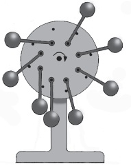
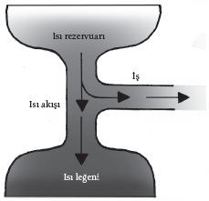

Enerji, entropi ve
daimi hareket arayışı
“Bedava yemek diye bir şey yoktur” deyişinin kökenleri tam olarak belli değildir, ama kaynakların çoğu bu deyişin ekonominin en anlamlı özetlerinden biriyle hayat bulduğunu söyler. Bu deyiş Pierre Dos Utt’un 1949 tarihli, TANSTAAFL: Yeni Ekonomik Dünya Düzeni İçin Bir Plan adlı monografisinde geçmiş; Dott burada ekonomik tavsiye arayışında olan bir kraldan bahsetmiştir. Kralın danışmanları, mesajlarını çok daha özlü bir biçimde verebilme çabasına girmişler, sonuçta bu deyişin klasikleşmiş bir biçiminde karar kılmışlardır: “Bedava yemek diye bir şey yoktur.”
Bu deyişin, yeni bir dünya düzeni başlatma konusunda ekonomistleri motive edip etmediği şüphelidir; dönemin fizikçileri herhalde hiç etkilenmemişlerdir. Hiçbir şey karşılığında bir şey alma fikri, uzun zamandır mucitlerin hedefi olmuştu; mucitler herhangi bir dış güce gerek kalmaksızın çalışacak “daimi hareket makineleri” yaparak yemeği bedavaya getirmeye çalışmışlardır. Fizikçiler de uzun zaman boyunca onlara bunun imkânsız olduğunu anlatmışlardır.
Bedava yemek diye bir şey yoktur, çünkü hiçbir şey karşılığında bir şey alamazsınız: Her zaman birinin, bir yerin ödemesi gerekir. Fizikçiler bu ilkeyi, fiziğin temel kanunu olarak baş tacı etmişlerdir. Bu yüzden bedava bir yemek aramaya başlamadan önce iyice bir düşünmeniz gerekir; çünkü evrenin işleyiş biçimine karşı savaşıyorsunuz demektir. Herhalde bunu en iyi büyük sanatçı, hayalci ve mucit Leonardo da Vinci dile getirmiştir. Da Vinci daimi harekete yakın bir ilgi duymuş, daimi hareket tasarımlarını incelemiş, nihayetinde birkaç tasarım geliştirmişti. Fakat bunların hepsine şüpheyle yaklaşıyordu: Defterlerinden birinde popüler bir makinenin ayrıntılı bir analizi bulunur; makinenin neden ve nasıl çalışmayacağını göstermektedir. Leonardo “Siz daimi hareket araştırmacıları, bu araştırmada ne kadar çok kuş beyinlice fikir ürettiniz. Simyacılara katılsanız yeridir,” diye yazmıştır.
<>
“Siz daimi hareket araştırmacıları, bu araştırmada
ne kadar çok kuş beyinlice fikir ürettiniz.
Simyacılara katılsanız yeridir.”
LEONARDO DA VINCI
<>
İki tür daimi hareket makinesi vardır. İlki, hiçbir yakıt ya da başka bir enerji girdisi olmamasına rağmen sonsuz bir iş üretimi sağlar. İkincisi, mükemmel bir verimlilikle ısıyı mekanik işe çevirir. Açıkça söylemek gerekir ki bunların ikisi de temenniden ibarettir; fizikçiler bize durumun neden böyle olduğunu anlatmaktadırlar.
Hiçbir Şeye Karşılık Bir Şey
Simyada söz konusu olduğu gibi, daimi hareket arayışı, Dünya’yı süsleyen en ince zihinlerin bazılarını meşgul etmiştir. Bu hayal en azından MS 624 yılından itibaren ortalarda dolanmaktadır; Hint matematikçi ve astronom Brahmagupta bu tarihte iç çubukları cıvayla doldurulacak bir tekerlek tarif etmiştir. Tekerlek döndükçe cıva, ağırlığı tekerleğin etrafında döndürecektir. Brahmagupta sonuçta “tekerleğin otomatikman sonsuza dek döneceğini” yazmıştır.
Bu fikir birçok kereler dile getirilmiştir. 1235’te Fransız sanatçı ve mucit Villard de Honnecourt kendi versiyonunu ortaya çıkarmıştır. De Honnecourt aptal değildi: Zamanı sayacak mekanik bir eşapman mekanizmasının bilinen ilk planlarını çizmişti. Fakat De Honnecourt’un “dengesi bozulmuş tekerlek” hâlâ işlememektedir. Burada bir dizi ağırlık bir tekerleğin çevresine bağlanmış, hareketleri millerle kısıtlanmıştır. Tekerlek döndükçe, ağırlıkların dağılımındaki dengesizlik dönmesini sağlar. Tekerlek döndükçe yükselen ağırlıklar millerinin üstüne düşer, böylece ağırlık aktarımı tekerleği döndürür.

DENGESİ BOZULMUŞ TEKERLEK
Sürekli dönen bir tekerleğin, daimi hareket arayışında tekrarlanan bir tema olması, ancak pek az insanın bu tür makineler inşa etmeye çalıştığı anlamına gelebilir. Böyle bir makine yaparsanız çok geçmeden, makinenizin işlemediğini anlarsınız. Örneğin De Honnecourt’un aşırı dengeli tekerleğini ele alalım. Bu tekerleğin sürekli dönmesi için gerekli olan şey, en tepedeki ağırlığın, tekerleğin tepesine vardığında kayıp dönmesi ve dengesizliği devam ettirmesidir. Maalesef böyle olmaz: Ağırlık dağılımı öyledir ki tepedeki ağırlık tam kayıp dönmez. Bir devirden sonra ağırlıklar baştaki konumlarına döner, her şey tam başlangıçtaki halini alır, buna hareketsiz tekerlek de dahildir.
De Honnecourt’un hakkını yemeyelim; bunun böyle olmasının sebebi onun devrinden epeyce sonra açıklık kazanmıştır. Sorun iki farklı biçim arasında enerjinin dönüşmesidir. Ağırlıklar kütleçekimin etkisiyle düşme potansiyeline sahip olduğundan, “potansiyel enerjiye” sahip oldukları söylenir. Tekerlek dönerse bu enerjinin bir bölümü hareketin “kinetik enerjisine” dönecektir. Fakat bir devirden sonra, ağırlıklar ilk konumlarına dönerler, dolayısıyla tam olarak öncekiyle aynı potansiyel enerjiye sahip olmaları gerekir (bu durum konumlarından kaynaklanır). Bir dış enerji kaynağı bulunmadığı, ağırlıklar her devirde aynı potansiyel enerjiye sahip oldukları için, dönen tekerleğe enerji verecek hiçbir şey yoktur.
Enerji Korunur
1775’e gelindiğinde, Paris’teki Kraliyet Bilimler Akademisi’nin daimi hareketle ilgili çalışmalardan artık sıtkı sıyrılmıştı. Akademi bu tarihte bir bildiri yayınlayarak “daimi hareketle ilgili teklifleri artık kabul etmeyeceğini ya da uğraş konusu edinmeyeceğini” duyurdu. 1841’de de bilim insanları nihayet daimi hareket arayışı içinde olanlara savurabilecekleri bilimsel bir ilke bulmuşlardı: Termodinamiğin ilk kanunu.
Termodinamiğin ilk kanunu enerjinin korunumuyla ilgili ilk apaçık ifadeydi. Leonardo da Vinci, “Düşen su, eğer etkinin kuvvetini dikkate alacak olursak aynı miktarda su taşırır,” demişti; fakat Alman fizikçi Julius Robert Von Mayer bu meseleyi daha düzgün bir biçimde inceleyecek ve bir hükümde bulunacaktı. Von Mayer, enerjinin yaratılamayacağını ya da ortadan kaldırılamayacağını söylemişti.
Kendisinin hemen ciddiye alındığı söylenemez. Örneğin ona bu tuhaf fikri destekleyecek bazı deneysel kanıtlar bulması söylendi. O da kendisinden isteneni yaptı; titreşimin kinetik enerjisinin su moleküllerine aktarılabileceğini, bunun da ısıda bir artış olarak tezahür edeceğini gösterdi. Bu nokta kanıtlandığında, ileri sürdüğü ilke fizikçiler tarafından hemen kabul edildi ve daimi hareketi bir kıyıda tutmak için kullanıldı. Hareket enerji ister, enerjinin korunumu ilkesi de kapalı bir sistemden, ilk başta sistemde olduğundan fazla enerji alamayacağınızı söyler. Sürtünme bütün mekanizmaları etkilediğinden, bu enerjinin bir kısmını ısı ve ses olarak dağıtmak, ilk türden daimi hareket makineleri icat etmek budalaların uğraşı haline gelmiş oluyordu. Bu durum, daimi hareket arayışı içinde olanların soluğunu tüketmiş değildi. Tam da bu tarihlerde termodinamik bilimi onlara yeni bir hayat veriyordu. Amaçları neydi peki? İkinci türde daimi hareket makineleri yapmak.
Mucize Makineler
İkinci tür daimi hareket makineleri, hava ya da okyanus gibi bir rezervuardan ısı enerjisi alan sonra bunu mekanik enerjiye çeviren makinelerdir. Bu tür makineler kesinlikle iyi bir fikir olarak görünüyor. Okyanuslar o kadar engin bir kaynaktır ki buradan ısı alabilecek olsaydık okyanus ısısında sadece bir derecelik bir düşüşe sebep olur, buna karşılık ABD’nin enerji ihtiyaçlarını yaklaşık yarım yüzyıl boyunca karşılayabilirdik.
Bu tür makinelerin akla yatkınlığı büyüleyicidir. Gerçekten de buhar gücüyle çalışan verimli bir makine yapmak, İskenderiyeli Hero’nun MS 1’de “aeolipile”i icat ettiği günlerden bu yana insanların takıntısı olmuştur. Buhar jetleri tarafından döndürülen bu top belli bir amaca hizmet etmiyordu. Gelgelelim peş peşe yapılan icatlarda buhar tribünleri, damlalıkları döndürmek, madenlerden su çekmek ve öğütme değirmenlerine güç vermek için kullanılmıştır. Ne var ki bunların hiçbiri gerçekten verimli olmaya yaklaşamamıştır. Bu verimlilik ilk kez 1765’te gösterime çıkan James Watt’ın buhar makinesiyle gelmiştir. James Watt’ın makinesi Thomas Newcomen’ın icat ettiği makinenin geliştirilmiş bir versiyonuydu ve verimliliği Sanayi Devrimi’ni başlatacak kadar artırmıştı. Bu tür makinelerin ardındaki kuram hâlâ gelişmekteydi. Buhar makinelerinin mucitleri bilimsel teoriler üzerine değil, sezgileri ve içgüdüleri üzerine çalışmışlardır.
Fransız askeri bilim adamı Sadi Carnot On the Motive Power of Fire adlı kitabını ancak 1824’te yayınlamıştır. Fakat o zaman bile, bu alanda yapılan bu başlıca çalışma on yıl boyunca fark edilmemiştir. Gelgelelim buhar makinesinin ardındaki bilimsel ilkeler artık yerli yerine oturmuştu. Hediyesi olarak da Carnot, ikinci tür daimi hareket makinelerinden bedava yemeği esirgeyen ilkeyi işlemişti.

CARNOT MAKİNESİ
Oda sıcaklığındaki bir ısı kaynağından yararlı bir iş alamamanızın iyi bir sebebi vardır. Buna termodinamiğin ikinci kanunu denir: Temel olarak bir şeyden ısı alıp sonra o ısıyı mekanik işe çeviremeyeceğinizi söyler. Bu ısının bir bölümünün, daha düşük bir ısıdaki “ısı leğenine” aktarılması gerekir. Bu “ısı makinesinden” ne kadar iş alacağınızı belirleyecek şey ısı kaynağı ile ısı leğeni arasındaki ısı farklılığıdır. Carnot, son derece verimli bir ısı makinesi yapmanın mümkün olduğunu göstermiştir.
Sıfırıncı Kanun Kuralı
Bunun neden böyle olduğunu görmek için, bir makine tasavvur edelim. İş yapmaya çalışan her makinenin enerjiye ihtiyacı vardır; enerjinin ısı biçiminde geldiğini düşünelim. Isı sıcak bir kaynaktan soğuk bir kaynağa doğru akar (bu ilke o kadar belirgin görünmektedir ki ancak diğer kanunlar ortaya konduktan sonra termodinamiğin “sıfırıncı kanunu” olarak resmileştirilmiştir); bu yüzden iki rezervuara ihtiyaç vardır; ısı sıcak bir “rezervuardan” soğuk bir rezervuara doğru akarken iş çıkarılabilir.
Bu durumda elde edilen iş, sıcak rezervuardan çıkan ısıyla soğuk rezervuara akan ısı arasındaki fark olacaktır. Mükemmel verimlilik durumunda, soğuk rezervuara sıfır ısı akacaktır; böylece ısı enerjisinin tamamı yapmak istediğiniz iş için kullanılmış olacaktır.
Şimdi Carnot’nun yaptığı gibi makinenin kullanımını düşünelim. Carnot, bir otomobil motorunun silindirine çok benzeyen bir piston makinesi tasavvur etmişti, bu makinede ısı, pistonu iten gazı genleştirmek için kullanılıyordu. Gaz sıkıştırılıyor, böylece döngü yeniden başlıyordu. Carnot basınç, ısı ve hacmi ilişkilendiren gaz kanunlarını değerlendirerek bir motorun verimliliğinin sıcak ve soğuk rezervuarların ısılarının birbirine oranına bağlı olduğunu göstermiştir. Motora güç vermek için hangi sıvının ya da gazın kullanıldığına bağlı olmaksızın, iki ısının birbirine oranı her şeyi vermektedir. Ve işte burada da bedava yemekle ilgili problem yatmaktadır.
---
EVRENİMİZ: TEK BEDAVA YEMEK
Fizikçi Alan Guth’a göre bedava yemek diye bir şey vardır. Ve hepimiz onun içinde yaşıyoruz. Guth evrenin “tek bedava yemek” olduğunu söylüyor. Kozmolojide “şişme” olarak bilinen fikri ortaya atan ilk kişi Guth olmuştur. Guth’a göre, evren ve içerdiği enerjinin tamamı bir gram maddeden daha azından çıkmış gibi görünmektedir. Büyük Patlama’yı izleyen bir saniyenin birkaçta biri sonrasında evren bir protondan 100 milyar kere daha küçüktü, fakat sonra bir balon gibi şişti. Aslına bakarsanız göz açıp kapayıncaya kadar geçen bu süre zarfında, hatta ondan daha kısa bir süre içinde bir bezelye tanesiyken şişip Samanyolu boyutlarına ulaştı.
Bu meseleyle ilgili rakamlar şaşırtıcıdır. Şişme, evren bir protonun yaklaşık bir milyarda biri boyutlarındayken başladı. 10-34 saniye sonra, başlangıçtaki boyutunun 10-25 katı daha genişlemiş, bir çakıl tanesi boyutlarına gelmişti. Kozmologlar bu süre zarfında evrendeki enerjinin 1075 kat arttığını söyler. Bütün bunlar kulağa hiçbir şeyden bir şey çıkmaz ya da bedava yemek yoktur kuralının çiğnenmesi gibi geliyor. Fakat bütün bunları fizik kanunları dahilinde tutan bir karmaşıklık vardır: Evrenin bir kısmı, negatif enerjidir.
Genel görelilik kuramına, uzay ve zamanın doğasına ilişkin en iyi betimlememize göre bir kütleçekim alanının enerjisi her zaman negatiftir. Şişme sırasında hızla genişleyen uzay-zaman içindeki enerji, daha da negatif hale gelir. Gelgelelim bu uzay-zaman içinde madde belirmeye başlamıştır. Bunun sebebi, uzay-zamanın özelliklerinin, uzay-zamanın bir bölümünün, elektronlar, pozitronlar ve nötronlar gibi parçacıkların kendiliğinden daha düşük bir enerji durumuna geçtiği anlamına geliyor olmasıdır. Madde pozitif enerjiye sahiptir; maddenin devam eden yaratımı daha da fazla pozitif enerji yaratıp büyümekte olan negatif enerjinin dengelenmesini sağlamıştır. Toplam enerji böylece sabit kalabilir. Antik Yunanlılar hiçbir şeyin hiçbir şeyden yaratılamayacağını söylüyorlardı; fakat şişme durumun farklı olduğunu haykırır.
---
Ortalama dizel motoru yaklaşık 550 0C’de çalışmaktadır. Atılan gazlar dışarıdaki ısıya çıkmaktadır. Carnot’nun yaptığı çalışmalara göre, mümkün olan azami verimlilik yaklaşık yüzde 60 civarındadır. Dizelle çalışan arabalar, aslında, yakıtın kimyasal enerjisinin yaklaşık yüzde 50’sini, arabayı yolda yürüten enerjiye çevirebilir. Geri kalan kısım ısı olarak israf olur (işte bu yüzden arabaların soğutma sistemlerine ihtiyacı vardır). Benzin motorları bu kadar bile verimli değildir.
<>
“Bir döngü içinde işlemekte olan bir motor, çevresi üzerinde
başka bir etki olmaksızın soğuk bir rezervuardan sıcak
bir rezervuara ısı transfer edemez.”
RUDOLPH CLAUSIUS
<>
Peki, iki rezervuarı da aşırı uçlarda ısıda çalıştırırsak ne olur? Teoride sıcak rezervuar sonsuz derecede yüksek ısılarda işleyebilir. Fakat soğuk rezervuar mutlak sıfırdan daha soğuk olamaz. Sıcaklığı boş uzaya boşalttığınızda bile soğuk rezervuarın ısısı 3 0K ya da -270 0C olacaktır. Sıfırdan daha aşağıya inemediğiniz ve sonsuz derecede sıcak bir rezervuar bulunmadığı için (en azından bildiğimiz kadarıyla yoktur), mükemmel verimlilikte bir motor imkânsızdır. Isının bir bölümünü israf etmeksizin, ısıyı işe çeviremezsiniz. Ve bu da döngüyü devam ettirmek için her zaman enerji eklemeniz gerektiği anlamına gelir. Başka bir deyişle bedava yemek yoktur.
Carnot’nun çalışması doğrudan, termodinamiğin ikinci kanununun formüle edilmesini beraberinde getirmiştir. İngiliz fizikçi Lord Kelvin ve Alman fizikçi Max Planck’ın ifade ettikleri üzere, termodinamiğin ikinci kanunu bir döngü içinde işleyen bir motorun, çevresi üzerinde başka bir etki olmaksızın ısıyı işe dönüştüremeyeceğini söyler. Bu ikinci kanun yüzünden, yemeği bedavaya getiremediğiniz gibi, buzdolabında bedavaya soğuk da tutamazsınız. Öyle anlaşılıyor ki soğutma Carnot motorunun tersine çalışmasından daha karmaşık değildir.
1850’de Alman fizikçi Rudolph Clausius termodinamiğin ikinci kanununun ifade edilme biçimini yeniden düzenlemiştir: “Bir döngü içinde işlemekte olan bir motor çevresi üzerinde başka bir etki olmaksızın soğuk bir rezervuardan, sıcak bir rezervuara ısı transfer edemez.” Başka bir deyişle bir buzdolabının enerjiye ihtiyacı vardır. Bu durum enerjinin doğal olarak “aşağıya doğru” akma eğiliminde olmasından kaynaklanır: Sıcaktan soğuğa doğru. Buzdolabınızın içini mutfağınızın ısısının altında tutma çabanız, arabanızın motorunu çalıştırdığınızda gerçekleşen gazların genişlemesi, sıkışması, ısınması ve soğuması süreçlerinin aynısını gerektirir ve bütün enerjiyi çekip alır. Fakat bu sefer gaz için bir genleştiriciden çok bir sıkıştırıcıya ihtiyacınız olacaktır.
Entropinin İlerleyişi
Daha önce belirttiğimiz üzere Carnot’nun çalışması gazın basıncı, ısısı ve hacminin değerlendirilmesini gerektiriyordu. Carnot’nun ortaya çıkardığı süreç, fizikçilerin başka bir şeyi açığa kavuşturmalarını sağladı: Entropi kavramı. Öyle anlaşılıyor ki bütün evren, çok daha büyük bir düzensizliğe doğru dönmektedir. Bu düzensizliği “entropi” olarak sınıflandıran fizikçi Clausius olmuştur; entropi Yunanca “dönüşüm” anlamına gelen bir sözcükten türetilmiştir. Clausius 1865’te, bir gazda atomların birbirinin üzerinde yaptığı işi konu alan bir matematik makalesi yazmıştır. Sonuçta Clausius, termodinamiğin ikinci kanununun yeni bir biçimde ifade edilebileceğini göstermiştir: kapalı bir sistemin entropisi, yani düzensizliği ya aynı kalır ya da artar, hiçbir zaman azalmaz.
Bu, entropinin küçük bir ölçekte arttığını göremeyeceğiniz anlamına gelmiyor. Buzdolabındaki öğle yemeğiniz soğuyacaktır örneğin; yemeği oluşturan moleküllerdeki düzensizlik azalacaktır. Fakat bunun termodinamiğin ikinci kanununu bozduğunu sanmayın. Buzdolabınızın içi kapalı bir sistem değildir; soğutucu gazın molekülleri ısıyı uzaklaştırır ve bunu yaparken düzensizlikleri artar. Isı mutfağınızdaki havaya aktarılırken, evinizdeki düzensizlik de artar.
Doğanın süreçleri birbiri ardına açıldıkça, evrenin tamamında böyle bir şey gerçekleşmektedir. Fizikçilerin bakış açısına göre bu durum, doğal süreçlerin geri çevrilemezliğini yaratır: Zaman oku termodinamiğin ikinci kanununu ifade etmenin yalnızca başka bir biçimidir. Carnot’nun motorunun döngüsünde israf olan enerji, evrenin mikrokozmik ölçekte yavaş yavaş açılmasıdır.
Termodinamiğin birinci ve ikinci kanunları bir arada ele alındığında, bedava yemekle ilgili bütün iddiaların önüne kocaman bir tuğla duvar çeker. Aslına bakarsanız bu iki kanun o kadar iyi kanıtlanmıştır ki ABD Patent Bürosu bir daimi hareket makinesi için patent almak üzere başvuranlara iyice düşünmeleri uyarısında bulunur; muhtemelen paralarını kaybedeceklerdir. Büronun resmi yazısında, “Patent Bürosu’nun görüşleri, bu konuyu araştırmış olan bilim insanlarının görüşleriyle aynı çizgidedir ve bu tür aygıtların fiziksel olarak imkânsız olduğu anlamına gelmektedir,” denir. “Büro’nun benimsediği bu konum ancak çalışan bir modelle bozulabilir… Büro, Daimi Hareket’i keşfettiklerine inanan başvuru sahiplerinin başvuru bedeli ödemelerini kabul etme konusunda tereddüt içindedir ve bu başvuru sahiplerine, Denetçi’nin sunumlarını değerlendirmesi sonrasında başvuru bedellerinin iade edilmeyeceği uyarısında bulunmanın adil olduğunu düşünmektedir.” Demek oluyor ki bırakın bedava yemek yemeyi, bedava yemek aramak bile pahalıya patlayabilir.